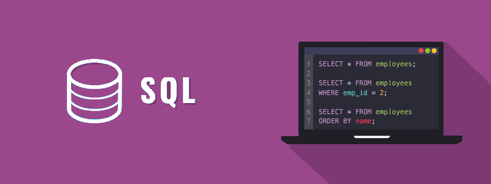

SQL – Njohuri themelore
SQL është gjuhë standarde e krijuar për menaxhimin e të dhënave në sistemin menaxhues të bazës së të dhënave relacionale.

SQL është akronim nga Structured Query Language – Gjuhë e strukturuar e kërkimit. SQL është gjuhë standarde programimi e krijuar posaçërisht për ruajtjen, rikuperimin, menaxhimin apo manipulimin e të dhënave brenda një sistemi relativ të menaxhimit të bazës së të dhënave (RDBMS – Relational Database Managment System). SQL u bë një standard ISO në vitin 1987.
SQL është gjuhë më e aplikueshme e bazës së të dhënave dhe e mbështetur nga sistemet e bazës së të dhënave relacionale, si MySQL, SQL Server dhe Oracle. Sidoqoftë, disa karakteristika të standardit SQL zbatohen ndryshe në sisteme të ndryshme të bazës së të dhënave.
SQL u zhvillua fillimisht në IBM në fillim të viteve 1970. Fillimisht quhej SEQUEL (Structured English Query Language) e cila më vonë u ndryshua në SQL (shqiptohet si ES-KJU-ELL).
Çfarë mund të bëni me SQL
Shumë gjëra mund të bëni me SQL:
- Mund të krijoni një bazë të të dhënave (databazë).
- Mund të krijoni tabela në një bazë të dhënash.
- Mund të kërkoni informacion nga një bazë të dhënash.
- Mund të futni shënime në një bazë të dhënash.
- Mund të përditësoni ose modifikoni të dhënat në një bazë të dhënash.
- Mund t’i fshini të dhënat nga baza e të dhënave.
- Mund të vendosni leje ose kontroll të qasjes brenda bazës së të dhënave për sigurinë e tyre.
Lista nuk përfundon këtu, gjithashtu mund të kryeni edhe shumë detyra të tjera të lidhura me bazën e të dhënave me SQL.
Shënim: Shumica e sistemeve relacionale të bazës së të dhënave gjithashtu kanë shtojcat e tyre shtesë të vetisë përveç standardit SQL që janë në dispozicion vetëm në sistemin e tyre.
SQL – Hyrje
SQL përdoret për të komunikuar me bazën e të dhënave, kështu që para se të filloni të eksperimentoni me SQL, së pari duhet të keni qasje në një sistem të bazës së të dhënave.
Për të ekzekutuar deklaratat SQL do t'ju duhet të keni qasje në një sistem të plotë të menaxhimit të bazës së të dhënave si MySQL, SQL Server etj.
Shënim: Baza e të dhënave SQL që do ta përdorim do të jetë MySQL në kuadër të ueb serverit XAMPP, të cilin më parë duhet ta instalojmë. Komunikimi me bazën e të dhënave mund të bëhet përmes linjës komanduese (command-line) ose inerfejsit që e ofron XAMPP. Si fillestarë do ta përdorim linjën komanduese.
Çfarë është baza e të dhënave relacionale
Baza e të dhënave relacionale është një bazë e të dhënave e ndarë në njësi logjike të quajtura tabela, ku tabelat lidhen me njëra-tjetrën brenda bazës së të dhënave. Baza e të dhënave relacionale lejon që të dhënat të ndahen në njësi logjike, më të vogla dhe të menaxhueshme për mirëmbajtje më të lehtë dhe performancë më të mirë.
Tabelat janë të lidhura me njëra-tjetrën përmes çelësave të përbashkët ose fushave në një sistem relacional të bazës së të dhënave, kjo është arsyeja pse të dhënat e dëshiruara mund të ekzistojnë në më shumë se një tabelë, andaj lehtë mund t’i bashkoni tabela të shumta së bashku për të marrë një grup të kombinuar të të dhënave duke përdorur një pyetje të vetme (single query).
Cilësimi i mjedisit të punës për praktikimin e SQL-së
Nëse nuk keni të instaluar DBMS (Database Management System – Sistemi i Menaxhimit të Databazës) në sistemin tuaj, i keni disa mundësi për të zgjedhur. Mund të instaloni një DBMS falas, me burim të hapur (open-source).
MySQL është sistem më i popullarizuar dhe më i mbështetur gjerësisht i sistemit të menaxhimit të bazës së të dhënave. Është shumë lehtë për t’u shkarkuar dhe përdorur dhe është e disponueshme për sistemin operativ Windows dhe Linux (ose UNIX). Mund ta shkarkoni shumë lehtë nga ky link https://dev.mysql.com/downloads/mysql/
Gjithashtu mund ta instaloni SQL Server Express. Është një version falas i Microsoft SQL Server i cili lejon deri në 10 GB hapësirë ruajtëse të bazës së të dhënave. Mund ta shkarkoni ekspres edicionin nga ky link: https://www.microsoft.com/en-in/download/details.aspx?id=30438
Në mënyrë alternative, nëse planifikoni të zhvilloni një aplikacion me PHP dhe MySQL, mund të instaloni WampServer ose XAMPP. XAMPP është një mjedis i zhvillimit të uebit në të gjitha sistemet operative të njohura. Ju mundëson të krijoni ueb aplikacione me Apache2, PHP dhe një bazë të dhënash MySQL. Gjithashtu do të sigurojë mjetin administrativ të MySQL të quajtur PhpMyAdmin për të menaxhuar me lehtësi bazat e të dhënave tuaja duke përdorur një ueb shfletues. Mund ta shkarkoni nga ky link: https://www.apachefriends.org/download.html
Sintaksa SQL
Sintaksa e SQL-së menaxhohet nga Instituti Kombëtar i Standardeve Amerikane (ANSI – American National Standards Institute) dhe Organizata Ndërkombëtare për Standardizim (ISO – International Organisation for Standardization).
Deklaratat SQL
Deklaratat SQL janë shumë të thjeshta dhe të drejtpërdrejta sikur gjuha angleze e rëndomt, por me sintaksë specifike.
Një deklaratë SQL përbëhet nga një sekuencë e fjalëve kyçe, identifikuesve, etj. të përfunduar nga një pikëpresje (;). Këtu kemi dhënë një shembull të një deklarate të vlefshme SQL.
Shembull:
SELECT emri_pun, data_pun, paga FROM punetoret WHERE paga > 5000;Për lexueshmëri më të mirë mund të shkruani të njëjtën deklaratë, kësisoj:
Shembull:
SELECT emri_pun, data_pun, paga
FROM punetoret
WHERE paga > 5000;Përdorni pikëpresje në fund të deklaratës SQL – ajo e përfundon deklaratën ose e dorëzon atë në serverin e bazës së të dhënave. Sidoqoftë, disa sisteme të menaxhimit të bazës së të dhënave nuk kanë ndonjë kërkesë të tillë, por konsiderohet si një praktikë më e mirë për ta përdorur atë.
Shënim: Çdo rresht i ri mund të ndodhë brenda një deklarate SQL, me kusht që çdo kalim në rresht të ri mos të ndajë fjalë kyçe, vlera, shprehje, etj.
Ndjeshmëria ndaj shkronjave në SQL
Merrni parasysh një deklaratë tjetër të SQL-së që tërheq rekordet nga tabela punetoret:
Shembull:
SELECT emri_pun, data_pun, paga FROM punetoret;Të njëjtën deklaratë mund ta shkruajmë edhe kësisoj:
Shembull:
select emri_pun, data_pun, paga from punetoret;Fjalët kyçe në SQL janë të pandjeshme në llojin e shkronjave që i përdorim, çka don të thotë se SELECT është e njëjtë sikur select. Por, baza e të dhënave dhe emrat e tabelave mund të jenë të ndjeshme në llojin e shkronjave në varësi të sistemit operativ. Në përgjithësi, platformat Unix ose Linux janë të ndjeshme në llojin e shkronjave, ndërsa platformat në Windows nuk janë.
Këshillë: Rekomandohet që të shkruani fjalët kyçe në SQL me shkronja të mëdha, për t’i dalluar ato nga teksti tjetër brenda një deklarate SQL për një kuptim më të mirë.
Komentet në SQL
Komenti është thjesht një tekst që nuk merret parasysh nga motori i databazës. Komentet mund të përdoren për të dhënë një informatë të shpejtë në lidhje me deklaratën SQL.
SQL mbështet komente në një rresht, si dhe në disa rreshta. Për të shkruar një koment në një rresht duhet filluar rreshtin me dy viza (--).
Shembull:
-- Përzgjedh të gjithë punëtorët
SELECT * FROM punetoret;Sidoqoftë, për të shkruar komente në shumë rreshta, duhet filluar komentin me një vizë të pjerrtë të ndjekur nga një yll (/*) dhe të përfundohet me një yll të ndjekur nga viza e pjerrtë (*/), kësisoj:
Shembull:
/* Përzgjedh të gjithë punëtorët
që kanë pagën më shumë se 5000 */
SELECT * FROM punetoret
WHERE paga > 5000;Krijimi i databazës
Para se të bëjmë ndonjë gjë me të dhënat, së pari duhet të krijojmë një bazë të dhënash (databazë). Supozojmë që tani kemi një server MySQL ose SQL të disponueshëm për përdorim, si dhe keni të gjitha privilegjet e nevojshme.
Deklarata SQL CREATE DATABASE përdoret për të krijuar një bazë të të dhënave.
Sintaksa
Sintaksa themelore për krijimin e një databaze mund të jepet kësisoj:
CREATE DATABASE emri_databazes;Deklarata e mëposhtme SQL krijon një bazë të të dhënave me emrin demo:
CREATE DATABASE demo;Krijimi i një databaze nuk e përzgjedh atë edhe për përdorim. Pra, para se të shkojmë më tej, duhet të zgjedhim databazën e synuar përmes deklaratës USE. Për shembull, USE demo; kjo urdhëresë cilëson databazën demo si databazë të zgjedhur për të gjitha urdhërat e ardhshme.
Shënim: Në Unix, databazat dhe emrat e tabelave janë të ndjeshme në llojin e shkronjave, kështu që gjithmonë duhet t'i referoheni databazave tuaja si demo, jo si Demo, DEMO ose diçka tjetër. Por, fjalët kyçe SQL nuk janë të ndjeshme në llojin e shkronjave, pra, CREATE DATABASE është e njëjtë me create database.
Krijimi i databazës në MySQL
Le të krijojmë një databazë në MySQL duke përdorur veglën në linjën komanduese (command-line).
Hapi 1: Përfshirja e linjës komanduese të MySQL
Për ta thirrur linjën komanduese MySQL, duhet të identifikohemi së pari në serverin MySQL. Për t'u identifikuar si përdorues root, shënoni komandën e mëposhtme në terminal dhe shtypni enter. Do t'ju kërkohet fjalëkalimi. Shënoni fjalëkalimin tuaj dhe shtypni enter, nëse është i saktë, do të shfaqet teksti mysql>, e në XAMPP do të shfaqet MariaDB [(none)]> përmes së cilës ju do të jeni në gjendje të shënoni deklarata SQL si dhe t’i shihni rezultatet.
shell> mysql -u root -pHapi 2: Krijimi i një databaze MySQL
Tani, ekzekutoni komandën e mëposhtme për të krijuar databazën me emrin demo.
mysql> CREATE DATABASE demo;Nëse databaza krijohet me sukses, do të shihni rezultatin diçka kësisoj:
Query OK, 1 row affected (0.03 sec)Nëse tentoni të krijoni një databazë me emër që tashmë ekziston, do të merrni një mesazh gabimi. Për të shmangur këtë në MySQL mund të përdorni një klauzolë opcionale IF NOT EXISTS:
mysql> CREATE DATABASE IF NOT EXISTS demo;Hapi 3: Përzgjedhja e databazës
Shënoni komandën e mëposhtme dhe shtypni enter. Do të shihni rezultatin "Database changed". Tani databaza jonë demo është përzgjedhur si databazë e paracaktuar për të gjitha operacionet e ardhshme.
mysql> USE demo;Këshillë: Nëse dëshironi të shihni një listë të databazave ekzistuese në serverin MySQL, mund të ekzekutoni deklaratën SHOW DATABASES; në linjën komanduese.
Krijimi i tabelave
Më parë mësuam se si të krijojmë një databazë në serverin e databazave. Tani është koha për të krijuar disa tabela brenda databazës tonë që në të vërtetë do të përmbajnë të dhënat. Një tabelë e të dhënave thjesht organizon informacionin në rreshta dhe kolona.
Deklarata SQL CREATE TABLE përdoret për të krijuar një tabelë.
Sintaksa
Sintaksa bazike për krijimin e një tabele mund të jetë:
CREATE TABLE emri_tabeles (
emri_kolona1 tipi_te_dhenave kufizimet,
emri_kolona2 tipi_te_dhenave kufizimet,
....
);Për ta kuptuar lehtë këtë sintaksë, le të krijojmë një tabelë në databazën tonë demo. Shënoni deklaratën vijuese në linjën komanduese të MySQL dhe shtypni enter:
Shembull:
-- Sintaksa për Databazën në MySQL
CREATE TABLE personat (
id INT NOT NULL PRIMARY KEY AUTO_INCREMENT,
emri VARCHAR(50) NOT NULL,
ditelindja DATE,
nr_telefonit VARCHAR(15) NOT NULL UNIQUE
);
-- Sintaksa për Databazën në SQL Server
CREATE TABLE personat (
id INT NOT NULL PRIMARY KEY IDENTITY(1,1),
emri VARCHAR(50) NOT NULL,
ditelindja DATE,
nr_telefonit VARCHAR(15) NOT NULL UNIQUE
);Deklarata e mësipërme krijon një tabelë me emrin personat me katër kolona: id, emri, ditelindja dhe nr_telefonit. Vini re se çdo emër kolone ndiqet nga një deklaratë për tipin e të dhënave; kjo deklaratë specifikon se çfarë lloji të të dhënave do të ruajë kolona, qoftë numri i plotë (integer), string, datë, etj.
Disa tipe të të dhënave mund të deklarohen me një parametër të gjatësisë që tregon se sa karaktere mund të ruhen në kolonë. Për shembull, VARCHAR(50) mund të përmbajë deri në 50 karaktere.
Shënim: Tipi i të dhënave të kolonave mund të ndryshojë në varësi të sistemit të databazës. Për shembull, MySQL dhe SQL Server mbështesin tipin e të dhënave INT për vlerat intexher (numra të plotë), ndërsa databazat Oracle mbështesin tipin e të dhënave NUMBER.
Tabela e mëposhtme përmbledh tipet e të dhënave më të përdorura që përkrahen nga MySQL.
|
Tipi i të dhënave |
Përshkrimi |
|
|
Ruan vlerat numerike në brezin prej -2147483648 deri 2147483647 |
|
|
Ruan vlerat decimale me precizitet të saktë. |
|
|
Ruan stringje me gjatësi fikse me një madhësi maksimale prej 255 karakteresh. |
|
|
Ruan stringje me gjatësi të ndryshueshme me një madhësi maksimale prej 65,535 karakteresh. |
|
|
Ruan stingje me një madhësi maksimale prej 65,535 karakteresh. |
|
|
Ruan vlerat e datave në formatin YYYY-MM-DD. |
|
|
Ruan vlerat e kombinuara të datës / orës në formatin: YYYY-MM-DD HH: MM: SS. |
|
|
Ruan vlerat e vulave kohore. Vlerat |
Ekzistojnë disa kufizime shtesë (të quajtura ndryshe modifikues) që janë cilësuar për kolonat e tabelës në deklaratën paraprake. Kufizimet definojnë rregullat në lidhje me vlerat e lejuara në kolona.
- Kufizimi
NOT NULLsiguron që fusha nuk mund të pranojë një vlerëNULL. - Kufizimi
PRIMARY KEYe bënë fushën përkatëse si çelësi kryesor i tabelës. - Atributi
AUTO_INCREMENTështë një shtojcë e MySQL në standardin SQL, e cila i thotë MySQL-së që automatikisht të caktojë një vlerë në këtë fushë nëse lihet e papërcaktuar, duke rritur vlerën e mëparshme për 1. Është në dispozicion vetëm për fushat numerike. - Kufizimi
UNIQUEsiguron që çdo rresht për një kolonë duhet të ketë një vlerë unike.
Shënim: Serveri SQL i Microsoft’it përdor vetinë IDENTITY për të kryer rritjen automatike. Vlera e paracaktuar është IDENTITY(1,1) që do të thotë vlera fillestare është 1, dhe vlera rritëse është gjithashtu 1.
Këshillë: Mund të ekzekutoni komandën DESC emri_tabeles; për të parë informacionin e kolonës ose strukturën e çdo tabele në databazat MySQL dhe Oracle, ndërsa EXEC kolona_ve emri_tabeles; në SQL Server (zëvendëson emri_tabeles me emrin aktual të tabelës).
Krijimi i tabelës nëse nuk ekziston
Nëse tentoni të krijoni një tabelë që vetëm ekziston tashmë brenda databazës, do të merrni një mesazh gabimi. Për të shmangur këtë në MySQL mund të përdorni një klauzolë opsionale IF NOT EXISTS:
Shembull:
CREATE TABLE IF NOT EXISTS personat (
id INT NOT NULL PRIMARY KEY AUTO_INCREMENT,
emri VARCHAR(50) NOT NULL,
ditelindja DATE,
nr_telefonit VARCHAR(15) NOT NULL UNIQUE
);Këshillë: Nëse dëshironi të shihni listën e tabelave brenda databazës aktualisht të zgjedhur, mund të ekzekutoni deklaratën SHOW TABLES në linjën komanduese të MySQL.
Kufizimet
Çfarë është kufizimi?
Kufizimi është thjesht një restrikcion (limitim) i vendosur në një ose më shumë kolona të një tabele për të kufizuar tipin e vlerave që mund të ruhen në atë kolonë. Kufizimet sigurojnë një mekanizëm standard për të ruajtur saktësinë dhe integritetin e të dhënave brenda një tabele në databazë.
Ekzistojnë disa lloje të ndryshme të kufizimeve në SQL, duke përfshirë:
NOT NULLPRIMARY KEYUNIQUEDEFAULTFOREIGN KEYCHECK
Kufizimi NOT NULL
Kufizimi NOT NULL specifikon që kolona nuk pranon vlera NULL.
Kjo do të thotë nëse kufizimi NOT NULL apikohet në një kolonë, atëherë nuk mund të futni një rresht të ri në tabelë pa shtuar një vlerë jo-NULL për atë kolonë.
Deklarata e mëposhtme SQL krijon një tabelë me emrin personat me katër kolona, nga të cilat tri kolona, id, emri dhe nr_telefonit nuk pranojnë vlera NULL.
Shembull:
CREATE TABLE personat (
id INT NOT NULL,
emri VARCHAR(30) NOT NULL,
ditelindja DATE,
nr_telefonit VARCHAR(15) NOT NULL
);Shënim: Një vlerë NULL është e ndryshme nga zero (0), zbraztira, ose një varg i karaktereve me gjatësi zero siç është ''. NULL do të thotë se nuk është bërë asnjë hyrje.
Kufizimi PRIMARY KEY
Kufizimi PRIMARY KEY identifikon kolonën ose bashkësinë e kolonave që kanë vlera që identifikojnë në mënyrë unike një rresht në një tabelë. Nuk munden dy rreshta në një tabelë të kenë të njëjtin çelës primar (primary key). Gjithashtu, nuk mund të futni vlerën NULL në një kolonë me çelës primar.
Deklarata e mëposhtme SQL krijon një tabelë me emrin personat dhe specifikon kolonën id si çelës primar. Kjo do të thotë që kjo fushë nuk lejon vlera NULL ose vlera të dubluara.
Shembull:
CREATE TABLE personat (
id INT NOT NULL PRIMARY KEY,
emri VARCHAR(30) NOT NULL,
ditelindja DATE,
nr_telefonit VARCHAR(15) NOT NULL
);Këshillë: Çelësi primar zakonisht vendoset nga një kolonë në tabelë, megjithatë më shumë se një kolonë mund të përbëjë çelësin primar, p.sh. edhe adresa e postës elektronike të punonjësit ose numri i caktuar i identifikimit mund të jetë logjikisht çelësi kryesor për një tabelë të punonjësve.
Kufizimi UNIQUE
Kufizimi UNIQUE përcakton që një ose më shumë kolona të përmbajnë vlera unike brenda një tabele.
Megjithëse të dy kufizimet UNIQUE dhe PRIMARY KEY zbatojnë unikalitetin, përdorni kufizimin UNIQUE në vend të PRIMARY KEY, kur doni të zbatoni veçantinë e një kolone, ose të kombinoni kolona, e që nuk posedojnë çelës primar.
Deklarata e mëposhtme SQL krijon një tabelë me emrin personat dhe specifikon kolonën nr_telefonit si unike. Kjo do të thotë që kjo fushë nuk lejon vlera të dubluara.
Shembull:
CREATE TABLE personat (
id INT NOT NULL PRIMARY KEY,
emri VARCHAR(30) NOT NULL,
ditelindja DATE,
nr_telefonit VARCHAR(15) NOT NULL UNIQUE
);Shënim: Disa kufizime UNIQUE mund të përcaktohen në një tabelë, ndërsa vetëm një PRIMARY KEY mund të përcaktohet në një tabelë. Gjithashtu, ndryshe nga kufizimi PRIMARY KEY, kufizimet UNIQUE i lejojnë vlerat NULL.
Kufizimi DEFAULT
Kufizimi DEFAULT specifikon vlerën e paracaktuar për kolonat.
Kolona e paracaktuar (default) është një vlerë që do të futet në kolonë nga motori i databazës kur një deklaratë INSERT nuk cakton në mënyrë të qartë një vlerë të posaçme.
Deklarata e mëposhtme SQL krijon një vlerë të paracaktuar për kolonën qyteti.
Shembull:
CREATE TABLE personat (
id INT NOT NULL PRIMARY KEY,
emri VARCHAR(30) NOT NULL,
ditelindja DATE,
nr_telefonit VARCHAR(15) NOT NULL UNIQUE,
qyteti VARCHAR(30) NOT NULL DEFAULT 'Bujanoc'
);Shënim: Nëse e definoni një kolonë të tabelës si NOT NULL, e më pas asaj kolone i caktoni një vlerë të paracaktuar, atëherë në deklaratën INSERT nuk keni nevojë të caktoni në mënyrë eksplicite një vlerë për atë kolonë në mënyrë që të futni një rresht të ri në tabelë.
Kufizimi FOREIGN KEY
Një çelës i huaj (FK – Foreign Key) është një kolonë ose kombinim i kolonave që përdoret për të vendosur dhe zbatuar një marrëdhënie midis të dhënave në dy tabela.
Në MySQL mund të krijoni një çelës të huaj duke definuar një kufizim FOREIGN KEY kur krijoni një tabelë si në shembullin më poshtë. Deklarata e mëposhtme përcakton një çelës të huaj në kolonën id_depart të tabelës punetoret që i referohet kolonës id_depart në tabelën departamentet.
Shembull:
CREATE TABLE punetoret (
id_pun INT NOT NULL PRIMARY KEY,
emri_pun VARCHAR(55) NOT NULL,
data_pun DATE NOT NULL,
paga INT,
id_depart INT,
FOREIGN KEY (id_depart) REFERENCES departamentet(id_depart)
);Kufizimi CHECK
Kufizimi CHECK përdoret për të përcaktuar vlerat e kufizuara që mund të vendosen në një kolonë.
Për shembull, rangu i vlerave për kolonën e pagave mund të përkufizohet duke krijuar një kufizim CHECK që lejon vetëm vlera nga 3,000 deri në 10,000. Kjo parandalon shënimin vlerës së pagave përtej kufirit të përcaktuar të pagave nga ndërmarrja.
Shembull:
CREATE TABLE punetoret (
id_pun INT NOT NULL PRIMARY KEY,
emri_pun VARCHAR(55) NOT NULL,
data_pun DATE NOT NULL,
paga INT NOT NULL CHECK (paga >= 3000 AND paga <= 10000),
id_depart INT,
FOREIGN KEY (id_depart) REFERENCES departamentet(id_depart)
);Shënim: MySQL nuk mbështet kufizimin CHECK të SQL-së. Klauzola CHECK analizohet, por injorohet nga të gjithë motorët e ruajtjes së MySQL.
Deklarata INSERT
Futja e të dhënave në tabelë
Në kaptinën paraprake kemi krijuar një tabelë me emrin personat në databazën tonë me emrin demo. Tani është koha për të futur disa të dhëna brenda tabelës sonë të të dhënave.
Deklarata INSERT INTO përdoret për të futur rreshta të rinj në një tabelë të databazës.
Sintaksa
Sintaksa themelore për futjen e të dhënave në një tabelë mund të jepet kësisoj:
INSERT INTO emri_tabeles (kolona1,kolona2,...) VALUES (vlera1,vlera2,...);Këtu kolona1, kolona2,..., etj. paraqesin emrat e kolonave të tabelës, ndërsa vlera1, vlera2,..., e kështu me radhë paraqesin vlerat përkatëse për këto kolona.
Le të fusim disa të dhëna në tabelën personat.
Hapi 1: Pamja e strukturës së tabelës
Para se të shtoni të dhëna, ide e mirë është të merrni informacion në lidhje me strukturën e tabelës. Ekzekutoni komandën e mëposhtme në linjën komanduese të MySQL, do të shfaqet informacioni për kolonat në tabelën personat, dmth. emri i kolonës, tipi i të dhënave, kufizimet, etj.
mysql> DESCRIBE personat;Hapi 2: Shtimi i shënimeve në tabelë
Deklarata e mëposhtme fut një rresht të ri në tabelën personat.
Shembull:
INSERT INTO personat (emri, ditelindja, nr_telefonit)
VALUES ('Altin Haziri', '2004-07-15', '062-8020361');E vutë re, nuk futëm ndonjë vlerë për fushën id? Sepse, siç e dimë, fusha id përmban AUTO-INCREMENT, që i thotë MySQL që automatikisht të caktojë një vlerë në këtë fushë nëse lihet e papërcaktuar.
Shënim: Vlerat jo-numerike si stringjet dhe datat duhet të jenë gjithmonë të rrethuara me thonjëza, ndërsa vlerat numerike nuk duhet të mbyllen kurrë brenda thonjëzave. Gjithashtu, nëse stringu juaj në vetvete përmban thonjëza, ju duhet të shënoni para thonjëzës \ (backslash).
Në mënyrë të ngjashme, futni një rresht tjetër në tabelën personat:
Shembull:
INSERT INTO personat (emri, ditelindja, nr_telefonit)
VALUES ('Shkurte Rrustemi', '2003-01-22', '063-7925512');Futni edhe një rresht më shumë në tabelën personat, në mënyrë të ngjashme:
Shembull:
INSERT INTO personat (emri, ditelindja, nr_telefonit)
VALUES ('Muhamed Selimi', '2002-11-09', '063-8325044');Tani nëse zgjidhni të dhënat nga tabela personat përmes kësaj deklarate:
SELECT * FROM personat;Rezultati do të duket kështu:
+----+------------------+------------+--------------+
| id | emri | ditelindja | nr_telefonit |
+----+------------------+------------+--------------+
| 1 | Altin Haziri | 1990-07-15 | 062-8020361 |
| 2 | Shkurte Rrustemi | 1995-05-01 | 063-7925512 |
| 3 | Muhamed Selimi | 2002-11-09 | 063-8325044 |
+----+------------------+------------+--------------+
Deklarata SELECT
Zgjedhja e të dhënave nga tabela
Në kaptinën e mëparshëme mësuam se si të fusim të dhëna në një tabelë të bazës së të dhënave. Tani do të zgjedhim të dhënat nga tabelat ekzistuese duke përdorur pyetësorin SQL (SQL query).
Deklarata SELECT përdoret për të zgjedhur ose për të rimarrë të dhëna nga një ose më shumë tabela. Mund ta përdorni këtë deklaratë për të zgjedh të gjitha rreshtat nga një tabelë në të njëjtën kohë, si dhe për të marrë vetëm ato rreshta që plotësojnë një kusht të caktuar ose një kombinim të kushteve.
Sintaksa
Sintaksa themelore për zgjedhjen e të dhënave nga një tabelë mund të jepet kësisoj:
SELECT emri_kolona1, emri_kolona2, emri_kolonaN FROM emri_tabeles;Këtu, emri_kolona1, emri_kolona2, ... janë emrat e kolonave ose fushave të një tabele të bazës së të dhënave vlerat e të cilave doni t’i zgjedhni. Sidoqoftë, nëse doni t’i zgjedhni vlerat e të gjitha kolonave të disponueshme në një tabelë, thjesht mund të përdorni sintaksën e mëposhtme:
SELECT * FROM table_name;Le t'i vëmë në përdorim këto deklarata. Supozoni se kemi një tabelë me emrin punetoret në databazën tonë që përmban shënimet e mëposhtme:
+--------+----------------+------------+------+-----------+
| id_pun | emri_pun | data_pun | paga | id_depart |
+--------+----------------+------------+------+-----------+
| 1 | Blend Pajaziti | 2001-05-01 | 5000 | 4 |
| 2 | Belkize Jusufi | 2002-07-15 | 6500 | 1 |
| 3 | Muhamed Selimi | 2005-10-18 | 8000 | 5 |
| 4 | Burhan Murati | 2007-01-03 | 7200 | 3 |
| 5 | Egzona Shabani | 2008-06-24 | 5600 | NULL |
+--------+----------------+------------+------+-----------+
Zgjidhni të gjitha nga tabela
Deklarata e mëposhtme do të kthejë të gjitha rreshtat nga tabela e punonjësve.
Shembull:
SELECT * FROM punetoret;Pas ekzekutimit, rezultati do të duket kësisoj:
+--------+----------------+------------+------+-----------+
| id_pun | emri_pun | data_pun | paga | id_depart |
+--------+----------------+------------+------+-----------+
| 1 | Blend Pajaziti | 2001-05-01 | 5000 | 4 |
| 2 | Belkize Jusufi | 2002-07-15 | 6500 | 1 |
| 3 | Muhamed Selimi | 2005-10-18 | 8000 | 5 |
| 4 | Burhan Murati | 2007-01-03 | 7200 | 3 |
| 5 | Egzona Shabani | 2008-06-24 | 5600 | NULL |
+--------+----------------+------------+------+-----------+
Siç mund ta shihni, deklarata e tillë i kthen të gjitha rreshtat dhe kolonat nga tabela punetoret.
Këshillë: Ylli (*) është karakter i tillë që do të thotë gjithçka. Për shembull, karakteri ylli në deklaratën SELECT të shembullit të mësipërm është një zëvendësim i shkurtë për të gjitha kolonat e tabelës punetoret.
Zgjidhni kolonat nga tabela
Nëse nuk ju nevojiten të gjitha të dhënat, mund të zgjidhni kolona specifike:
Shembull:
SELECT id_pun, emri_pun, salary
FROM punetoret;Pas ekzekutimit të kësaj deklarate, do të merrni këtë rezultat:
+--------+----------------+------+
| id_pun | emri_pun | paga |
+--------+----------------+------+
| 1 | Blend Pajaziti | 5000 |
| 2 | Belkize Jusufi | 6500 |
| 3 | Muhamed Selimi | 8000 |
| 4 | Burhan Murati | 7200 |
| 5 | Egzona Shabani | 5600 |
+--------+----------------+------+
Siç mund ta shihni këtë herë nuk janë kolonat data_pun dhe id_depart në grupin e rezultateve. Në kapitullin tjetër do të mësojmë se si të zgjedhim të dhënat nga një tabelë të bazuara në një kusht.
Klauzola WHERE
Përzgjedhja e të dhënës bazuar në kusht
Në kapitullin e mëparshëm mësuam se si të marrim të gjitha të dhënat nga një tabelë ose kolona të caktuara nga tabela. Por, në skenarin e botës reale zakonisht duhet të zgjedhim, përditësojmë ose fshijmë vetëm ato të dhëna që përmbushin kushte të caktuara si p.sh., punëtorët që i përkasin një grupmoshe të caktuar, ose vendi, etj.
Klauzola WHERE përdoret me SELECT, UPDATE, dhe DELETE. Sidoqoftë, do të shihni përdorimin e kësaj klauzole me deklaratat e tjera në kapitujt e ardhshëm.
Sintaksa
Klauzola WHERE përdoret me deklaratën SELECT për të nxjerrë vetëm ato të dhëna që plotësojnë kushtet e specifikuara. Sintaksa themelore mund të jepet kësisoj:
SELECT liste_kolonave FROM emri_tabeles WHERE kushti;Këtu, liste_ kolonave janë emrat e kolonave / fushave si emri, mosha, vendi etj. të një tabele në bazën e të dhënave vlerat e së cilës doni t’i merrni. Sidoqoftë, nëse doni të merrni vlerat e të gjitha kolonave të disponueshme në një tabelë, mund të përdorni sintaksën e mëposhtme:
SELECT * FROM emri_tabeles WHERE kushti;Tani, le t’i shohim disa shembuj që tregojnë se si funksionon në të vërtetë.
Supozoni se kemi një tabelë të quajtur punetoret në databazën tonë me të dhënat e mëposhtme:
+--------+----------------+------------+------+-----------+
| id_pun | emri_pun | data_pun | paga | id_depart |
+--------+----------------+------------+------+-----------+
| 1 | Blend Pajaziti | 2001-05-01 | 5000 | 4 |
| 2 | Belkize Jusufi | 2002-07-15 | 6500 | 1 |
| 3 | Muhamed Selimi | 2005-10-18 | 8000 | 5 |
| 4 | Burhan Murati | 2007-01-03 | 7200 | 3 |
| 5 | Egzona Shabani | 2008-06-24 | 5600 | NULL |
+--------+----------------+------------+------+-----------+
Filtroni të dhënat me klauzolën WHERE
Deklarata e mëposhtme SQL do t’i kthejë të gjithë punëtorët nga tabela punetoret, paga e të cilëve është më e madhe se 7000. Klauzola WHERE i filtroi të dhënat e panevojshme.
Shembull:
SELECT * FROM punetoret
WHERE paga > 7000;Pas ekzekutimit, rezultati do të duket kësisoj:
+--------+----------------+------------+------+-----------+
| id_pun | emri_pun | data_pun | paga | id_depart |
+--------+----------------+------------+------+-----------+
| 3 | Muhamed Selimi | 2005-10-18 | 8000 | 5 |
| 4 | Burhan Murati | 2007-01-03 | 7200 | 3 |
+--------+----------------+------------+------+-----------+
Siç mund ta shihni rezultati përmban vetëm ata punëtorë që paga e tyre është më e madhe se 7000. Në mënyrë të ngjashme, mund të merrni të dhëna nga kolona të veçanta, kësisoj:
Shembull:
SELECT id_pun, emri_pun, paga
FROM punetoret
WHERE paga > 7000;Pas ekzekutimit të deklaratës së mësipërme, do të merrni këtë rezultat:
+--------+----------------+------+
| id_pun | emri_pun | paga |
+--------+----------------+------+
| 3 | Muhamed Selimi | 8000 |
| 4 | Burhan Murati | 7200 |
+--------+----------------+------+
Deklarata e mëposhtme do të marrë shënimet e një punëtori, ID-ja e të cilit është 2.
Shembull:
SELECT * FROM punetoret
WHERE id_pun = 2;Deklarata do të prodhoj këtë rezultat:
+--------+----------------+------------+------+-----------+
| id_pun | emri_pun | data_pun | paga | id_depart |
+--------+----------------+------------+------+-----------+
| 2 | Belkize Jusufi | 2002-07-15 | 6500 | 1 |
+--------+----------------+------------+------+-----------+
Këtë herë si rezultat kemi vetëm një rresht, pasi id_pun është unik për çdo punëtor.
Operatorët e lejuar në klauzolën WHERE
SQL përkrah numër të operatorëve të ndryshëm që mund të përdoren në klauzolën WHERE, ata më të rëndësishmit janë përmbledhur në tabelën vijuese.
|
Operatori |
Përshkrimi |
Shembull |
|
|
I barabartë |
|
|
|
Më i madh se |
|
|
|
Më i vogël se |
|
|
|
Më i madh ose i barabartë |
|
|
|
Më i vogël ose i barabartë |
|
|
|
Përputhje e thjeshtë e modelit |
|
|
|
Kontrolloni nëse një vlerë e specifikuar përputhet me ndonjë vlerë në një listë ose nënpyetje |
|
|
|
Kontrolloni nëse një vlerë e specifikuar është brenda një vargu vlerash |
|
Operatorët AND & OR
Nganjëherë duhet të filtroni të dhënat bazuar në më shumë kushte si p.sh., zgjedhja e punëtorëve, mosha e të cilëve është më e vjetër se 30 dhe shteti prej nga janë është Shqipëria, pastaj zgjedhja e produkteve çmimi i të cilave është më i ulët se 100 lekë dhe vlerësimet janë më të mëdha se 4, etj.
Operatori AND
Operatori AND është një operator logjik që kombinon dy kushte dhe kthen TRUE vetëm nëse të dy kushtet vlerësohen si TRUE. Operatori AND shpesh përdoret në klauzolën WHERE të deklaratës SELECT, UPDATE, DELETE për të formuar kushtet që do të filtrojnë një grup të rezultateve.
SELECT emri_kolona1, emri_kolona2, emri_kolonaN
FROM emri_tabeles
WHERE kushti1 AND kushti2;Le të shohim disa shembuj që tregojnë se si funksionon në të vërtetë.
Supozoni se keni një tabelë të quajtur punetoret në databazën tonë me të dhënat e mëposhtme:
+--------+----------------+------------+------+-----------+
| id_pun | emri_pun | data_pun | paga | id_depart |
+--------+----------------+------------+------+-----------+
| 1 | Blend Pajaziti | 2001-05-01 | 5000 | 4 |
| 2 | Belkize Jusufi | 2002-07-15 | 6500 | 1 |
| 3 | Muhamed Selimi | 2005-10-18 | 8000 | 5 |
| 4 | Burhan Murati | 2007-01-03 | 7200 | 3 |
| 5 | Egzona Shabani | 2008-06-24 | 5600 | NULL |
+--------+----------------+------------+------+-----------+
Deklarata e mëposhtme SQL do të kthejë vetëm ata punëtorë nga tabela e punetoret paga e të cilëve është më e madhe se 7000 dhe id_depart është e barabartë me 5.
Shembull:
SELECT * FROM punetoret
WHERE paga > 7000 AND id_depart = 5;Pas ekzekutimit, do të merrni këtë rezultat:
+--------+----------------+------------+------+-----------+
| id_pun | emri_pun | data_pun | paga | id_depart |
+--------+----------------+------------+------+-----------+
| 3 | Muhamed Selimi | 2005-10-18 | 8000 | 5 |
+--------+----------------+------------+------+-----------+
Operatori OR
Në mënyrë të ngjashme, operatori OR është gjithashtu një operator logjik që kombinon dy kushte, por kthen të TRUE nëse vetëm një prej kushteve është TRUE.
Deklarata e mëposhtme SQL do të kthejë të gjithë punëtorët nga tabela punetoret paga e të cilëve është ose më e madhe se 7000 ose id_depart është e barabartë me 5.
Shembull:
SELECT * FROM punetoret
WHERE paga > 7000 OR id_pun = 5;Këtë herë do të merrni këtë rezultat:
+--------+----------------+------------+------+-----------+
| id_pun | emri_pun | data_pun | paga | id_depart |
+--------+----------------+------------+------+-----------+
| 3 | Muhamed Selimi | 2005-10-18 | 8000 | 5 |
| 4 | Burhan Murati | 2007-01-03 | 7200 | 3 |
+--------+----------------+------------+------+-----------+
Kombinimi i operatorëve AND & OR
Gjithashtu mund të kombinoni operatorët AND dhe OR për të krijuar kushtëzime të ndërlikuara.
Deklarata e mëposhtme e SQL do të kthejë të gjithë punëtorët, paga e të cilëve është më e madhe se 5000 dhe id_depart është e barabartë me 1 ose 5.
Shembull:
SELECT * FROM punetoret
WHERE paga > 5000 AND (id_depart = 1 OR id_depart = 5);Pas ekzekutimit të query-it (pyetësorit) të mësipërm, do të merrni këtë rezultat:
+--------+----------------+------------+------+-----------+
| id_pun | emri_pun | data_pun | paga | id_depart |
+--------+----------------+------------+------+-----------+
| 2 | Belkize Jusufi | 2002-07-15 | 6500 | 1 |
| 3 | Muhamed Selimi | 2005-10-18 | 8000 | 5 |
+--------+----------------+------------+------+-----------+
Operatorët IN & BETWEEN
Mësuam se si të kombinojmë më shumë kushte duke përdorur operatorët AND dhe OR. Sidoqoftë, ndonjëherë kjo nuk është e mjaftueshme dhe shumë produktive, për shembull, nëse duhet të kontrolloni vlerat që ndodhen brenda një diapazoni ose një grup vlerash.
Operatorët IN dhe BETWEEN paraqesin një mundësi që mundësojnë të përcaktoni një diapazon ekskluziv ose një grup vlerash në vend se të kombinoni kushtet e ndara.
Operatori IN
Operatori IN është operator logjik që përdoret për të kontrolluar nëse një vlerë e veçantë ekziston brenda një grupi vlerash apo jo. Sintaksa e saj themelore mund të jepet kësisoj:
SELECT liste_kolonave FROM emri_tabeles
WHERE emri_kolones IN (vlera1, vlera1,...);Këtu, liste_ kolonave janë emrat e kolonave / fushave si emri, mosha, vendi etj., të një tabele të bazës së të dhënave vlerat e së cilës doni t’i merrni. T’i shohim disa shembuj.
Supozojmë se kemi një tabelë punetoret në databazën tonë që ka të dhënat e mëposhtme:
+--------+----------------+------------+------+-----------+
| id_pun | emri_pun | data_pun | paga | id_depart |
+--------+----------------+------------+------+-----------+
| 1 | Blend Pajaziti | 2001-05-01 | 5000 | 4 |
| 2 | Belkize Jusufi | 2002-07-15 | 6500 | 1 |
| 3 | Muhamed Selimi | 2005-10-18 | 8000 | 5 |
| 4 | Burhan Murati | 2007-01-03 | 7200 | 3 |
| 5 | Egzona Shabani | 2008-06-24 | 5600 | NULL |
+--------+----------------+------------+------+-----------+
Deklarata e mëposhtme SQL do të kthejë vetëm ata punëtorë, id_depart i të cilëve është 1 ose 3.
Shembull:
SELECT * FROM punetoret
WHERE id_depart IN (1, 3);Pas ekzekutimit të query-it, do të merrni këtë rezultat:
+--------+----------------+------------+------+-----------+
| id_pun | emri_pun | data_pun | paga | id_depart |
+--------+----------------+------------+------+-----------+
| 2 | Belkize Jusufi | 2002-07-15 | 6500 | 1 |
| 4 | Burhan Murati | 2007-01-03 | 7200 | 3 |
+--------+----------------+------------+------+-----------+
Në mënyrë të ngjashme, mund të përdorni operatorin NOT IN, i cili është saktësisht i kundërt me IN. Deklarata e mëposhtme SQL do të kthejë të gjithë punetoret, përveç atyre që id_dept e kanë vlerën 1 ose 3.
Shembull:
SELECT * FROM punetoret
WHERE id_depart NOT IN (1, 3);Pas ekzekutimit të query-it, do të merrni këtë rezultat:
+--------+----------------+------------+------+-----------+
| id_pun | emri_pun | data_pun | paga | id_depart |
+--------+----------------+------------+------+-----------+
| 1 | Blend Pajaziti | 2001-05-01 | 5000 | 4 |
| 3 | Muhamed Selimi | 2005-10-18 | 8000 | 5 |
+--------+----------------+------------+------+-----------+
Operatori BETWEEN
Ndonjëherë dëshironi të zgjidhni një rresht nëse vlera në një kolonë bie brenda një diapazoni të caktuar. Ky lloj kushti është i zakonshëm kur punoni me të dhëna numerike.
Për të kryer query-n të bazuar për një kusht të tillë mund të përdorni operatorin BETWEEN. Ky është një operator logjik që mundëson të specifikoni një interval të vlerave:
SELECT emri_kolones1, emri_kolones2, emri_kolones3
FROM emri_tabela
WHERE emri_kolones BETWEEN vlera_min AND vlera_max;Le të ndërtojmë dhe kryejmë query duke u bazuar në kushtet e intervalit në tabelën tonë punetoret.
Deklarata e mëposhtme SQL do të kthejë vetëm ata punëtorë nga tabela punetoret, paga e të cilëve është brenda intervalit të vlerave 7000 dhe 9000.
Shembull:
SELECT * FROM punetoret
WHERE paga BETWEEN 7000 AND 9000;Pas ekzekutimit, do të merrni këtë rezultat:
+--------+----------------+------------+------+-----------+
| id_pun | emri_pun | data_pun | paga | id_depart |
+--------+----------------+------------+------+-----------+
| 3 | Muhamed Selimi | 2005-10-18 | 8000 | 5 |
| 4 | Burhan Murati | 2007-01-03 | 7200 | 3 |
+--------+----------------+------------+------+-----------+
Kur përdorni operatorin BETWEEN me vlerat e datës ose kohës, përdorni funksionin CAST() për të konvertuar në mënyrë eksplicite vlerat e tipit të dëshiruar të të dhënave që të fitojmë rezultatet më të mira. Për shembull, nëse përdorni një string të tillë si '2016-12-31' në krahasim me një DATE, përpunoni stringun në një DATE, kësisoj:
Deklarata e mëposhtme SQL zgjedh të gjithë punëtorët që u punësuan në mes 1 janarit 2006 (d.m.th. '2006-01-01') dhe 31 dhjetorit 2016 (d.m.th. '2016-12-31'):
Shembull:
SELECT * FROM punetoret WHERE data_pun
BETWEEN CAST('2006-01-01' AS DATE) AND CAST('2016-12-31' AS DATE);Pas ekzekutimit të query-it, do të merrni këtë rezultat:
+--------+----------------+------------+------+-----------+
| id_pun | emri_pun | data_pun | paga | id_depart |
+--------+----------------+------------+------+-----------+
| 4 | Burhan Murati | 2007-01-03 | 7200 | 3 |
| 5 | Egzona Shabani | 2008-06-24 | 5600 | NULL |
+--------+----------------+------------+------+-----------+
Deri sa intervalet e datave dhe numrave janë më të zakonshme, gjithashtu mund të krijoni kushte që kërkojnë brenda intervaleve të stringjeve. Deklarata e mëposhtme SQL zgjedh të gjithë punëtorët, emri i të cilëve fillon me ndonjë nga shkronjat ne mes 'D' dhe 'S':
Shembull:
SELECT * FROM punetoret
WHERE emri_pun BETWEEN 'D' AND 'S';Pas ekzekutimit të query-it, do të merrni këtë rezultat:
+--------+----------------+------------+------+-----------+
| id_pun | emri_pun | data_pun | paga | id_depart |
+--------+----------------+------------+------+-----------+
| 3 | Muhamed Selimi | 2005-10-18 | 8000 | 5 |
| 5 | Egzona Shabani | 2008-06-24 | 5600 | NULL |
+--------+----------------+------------+------+-----------+